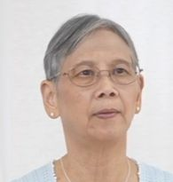

Dr Therese Chan
Secretary & Advisor
Dr. Chan graduated from the University of Hong Kong Medical School and spent decades as a family physician, working in both public hospitals and private practice. She lived alongside her husband’s struggle with depression for nearly 30 years, during which he survived two suicide attempts. After he died by suicide in 1998, she co-founded Dance with Depression with Dr. Tso and Dr. Lee, focusing on peer support groups for those living with depression, finding meaning in her grief. From her husband’s lifelong struggle with depression, Dr. Chan came to understand how profoundly lonely the illness can be—especially without community support. While supportive of psychotherapy and medication, Dr. Chan recognized that knowledge about depression and community support play a crucial role in healing but are often overlooked in traditional medical care.
Over the next 24 years, one support group grew into many, and more than 600 people found healing through the stigma-free community. The program also expanded to provide grants for psychotherapy and opportunities for current and past participants to engage in healing practices such as music, drama, and dance therapy.
Throughout this time, Dr. Chan pursued her own growth through talk therapy and other healing modalities, ensuring that her personal journey informed her service to others.
In recent years, she has developed a deep interest in functional medicine, Chinese medicine, and plant-based nutrition. In 2024, she formally adopted Zen Buddhism in the Plum Village tradition. At Dance with Depression in Utah, Dr. Chan serves as Secretary of the Board and advisor to communal support initiatives.